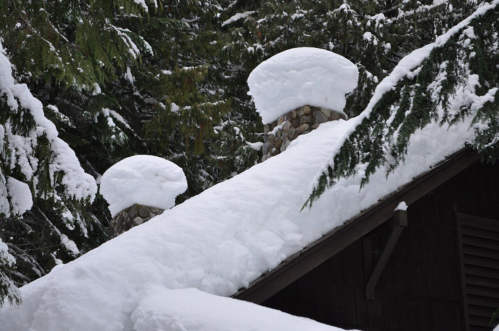
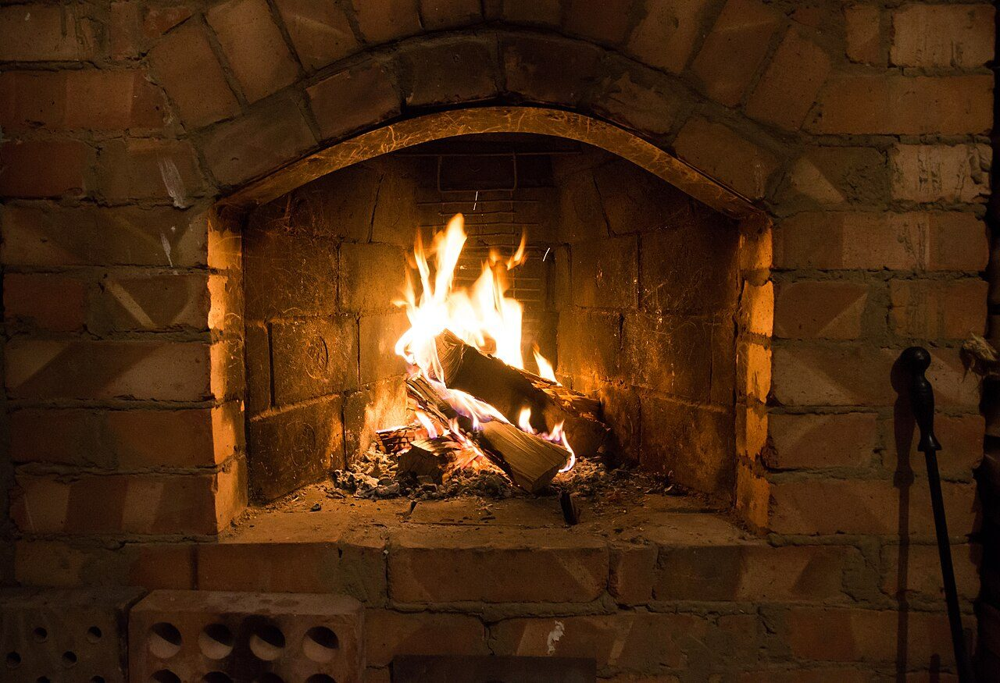
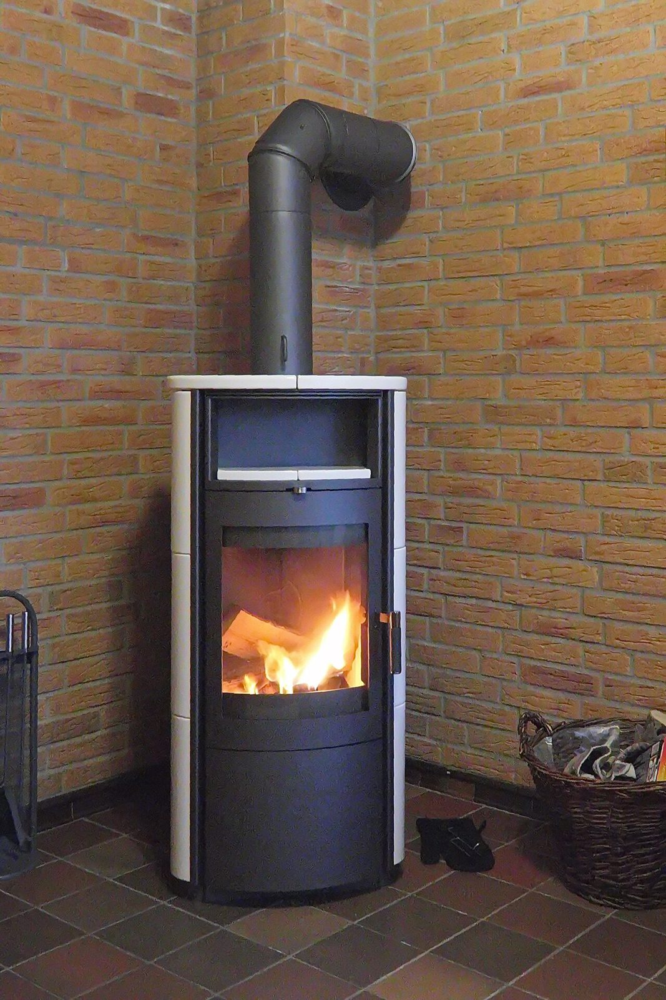
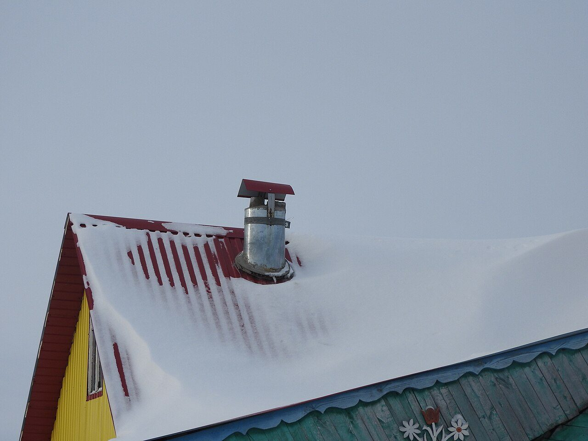
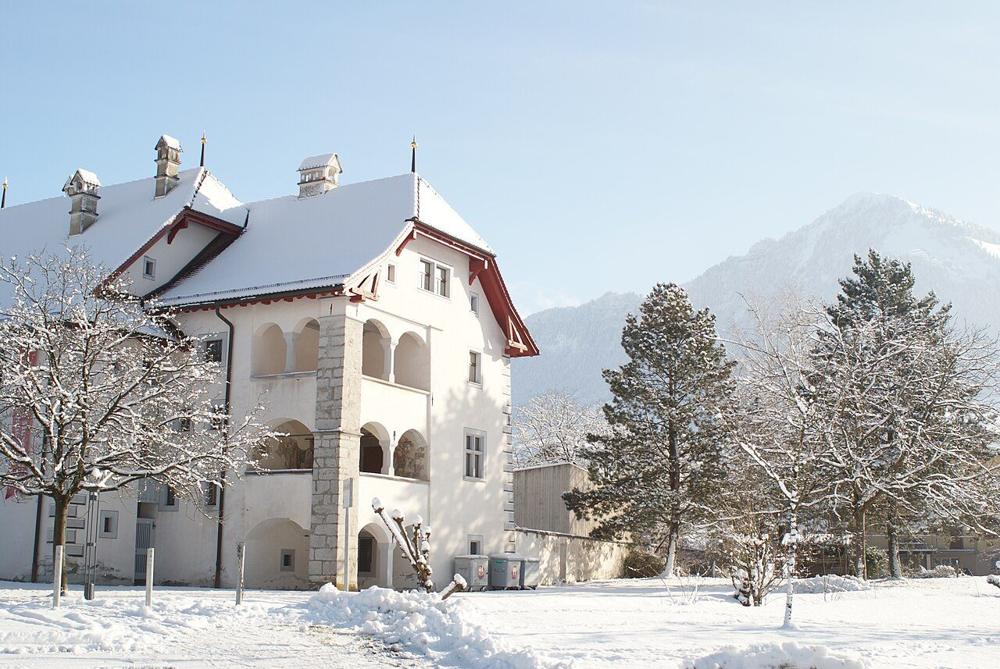
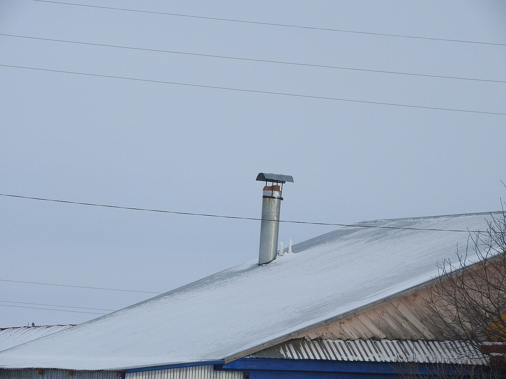

Saison de chauffage 2026-2027 — réservez avant le plein automne
À Shawinigan depuis 2000 : ramonage, inspection, réparation et installation de cheminées — et vente de gaines rigides et flexibles en acier inoxydable. L'entretien complet de votre cheminée, par une entreprise d'ici.

Nos services
Ramonage, inspection, réparation et installation de cheminées à Shawinigan — en opération depuis 2000, avec vente de gaines en acier inoxydable.
Brossage complet du conduit, du foyer au chapeau : on retire la créosote et la suie qui s'accumulent — le premier risque d'incendie de cheminée — avant la saison de chauffage.
Inspection de la cheminée et du conduit pour repérer les problèmes — fissures, accumulation de créosote, état du chapeau — avant qu'ils deviennent coûteux.
Réparation de cheminées et de leurs composantes : on vous dit franchement ce qui peut être réparé et ce qui devrait être remplacé.
Installation de cheminées et d'appareils de chauffage, faite selon les règles — du conduit jusqu'au chapeau.
Vente de gaines rigides et flexibles en acier inoxydable : la façon durable de rénover un conduit vieillissant, sans reconstruire la cheminée.
Une entreprise de Shawinigan, en opération depuis 2000 : un seul numéro pour le ramonage, l'inspection, la réparation et l'installation de votre cheminée.
Comment ça marche
Appelez ou remplissez le formulaire au bas de la page avec votre type d'appareil. On vous donne un prix ferme selon le nombre de conduits — sans frais, sans engagement.
On protège les planchers et les meubles autour du foyer, on brosse le conduit au complet et on aspire les suies avec un aspirateur industriel. Aucune poussière dans la maison.
Vous recevez votre rapport écrit sur place : état du conduit et recommandations claires — ce qui est urgent, ce qui peut attendre.
Forfaits ramonage 2026
Prix pour une cheminée standard — le prix exact est confirmé au téléphone selon le nombre de conduits et la hauteur du toit. Aucun supplément surprise une fois sur place.
Prix d'exemple pour une cheminée standard d'un étage, taxes en sus. Conduits supplémentaires et toits très élevés : prix confirmé avant la visite.
Zones desservies
ShawiniganOn dessert Shawinigan. Vous êtes tout près de la ville ? Appelez-nous quand même — on vous dira si votre adresse entre dans notre trajet d'automne.





Témoignages
« Après l'achat de la maison, je voulais savoir dans quel état était la cheminée. Inspection faite, résultat expliqué clairement — et maintenant, je le sais. »
Martin L. — propriétaire, Shawinigan (témoignage de démonstration)« Aucune poussière, aucune suie dans le salon. Ils protègent tout avant de commencer et repartent avec leurs déchets. Le poêle tire comme un neuf. »
Sophie D. — cliente résidentielle, Shawinigan (témoignage de démonstration)« Ramonage fait chaque automne, rendez-vous planifié d'avance. Travail propre, cheminée vérifiée avant l'hiver — jamais de surprise. »
Karine B. — cliente résidentielle, Shawinigan (témoignage de démonstration)Questions fréquentes
Au moins une fois par année, idéalement avant la saison de chauffage. Chaque feu dépose de la créosote dans le conduit ; quand elle s'accumule, le risque d'incendie de cheminée grimpe vite. Plusieurs assureurs demandent d'ailleurs une preuve d'entretien annuel.
Non — c'est même ce qu'on nous dit le plus souvent après une visite. On protège les planchers et les meubles autour du foyer, le conduit est scellé pendant le brossage et les suies sont aspirées par un aspirateur industriel. Vous retrouvez votre salon comme on l'a trouvé.
On vérifie l'état du conduit, de la maçonnerie et du chapeau, et on vous remet un rapport écrit de l'inspection : vous savez ce qui va bien, ce qui demande attention et ce qui devrait être réparé.
Les cheminées et conduits des appareils au bois, aux granules, au gaz et au mazout : poêles, foyers, encastrables et fournaises à bois. Si votre appareil est moins courant, décrivez-le dans le formulaire — on vous confirme avant le rendez-vous.
Le chapeau garde l'eau de pluie et la neige hors du conduit, empêche les animaux et les oiseaux d'y nicher et bloque les débris qui nuisent au tirage. Le grillage pare-étincelles réduit aussi les braises qui s'échappent par le haut. C'est un petit investissement qui protège la maçonnerie longtemps.
Soumission gratuite
L'automne se remplit vite — dès septembre, les semaines avant la saison de chauffage partent en premier. Demandez votre rendez-vous maintenant, on vous confirme le prix exact pour votre cheminée.